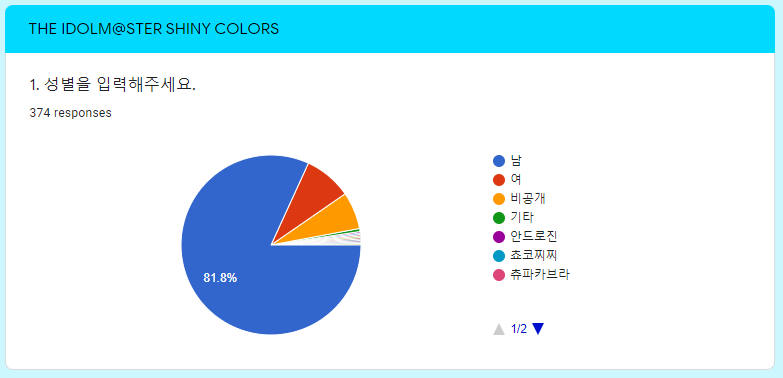

2021년도 샤이니 컬러즈 설문조사가 종료되었습니다.
해당 설문조사는 2020/10/04 ~ 2020/11/30 23:59:59의 기간동안 진행되었으며,
총 374명 (전년도 대비 1.30배)의 이용자에게
대답을 제공받았습니다.
설문 결과에 대한 요약은 아래에서 확인하실 수 있으며,
정제되지 않은 데이터는
링크
에서 확인하실 수 있습니다.
해당 데이터는 개인정보 보호를 위해 응답 순서를 랜덤하게 정렬하였습니다.
----------------------------------------
* 결과 요약은 선 사진, 후 문항, 선택지 및 요약으로 이루어져 있음
* 사진이 보이지 않을 경우를 고려하여 사진에 포함된 내용이더라도 요약에 서술하였음.
* 주관식은 최대한 답변 원문 그대로 적으려 노력하였고, 설명이 부족한 경우 풀어서 서술함.
----------------------------------------

1. 성별을 입력해주세요.
* 기본 제공 선택지는 (남, 여, 비공개, 기타)이며, 선택지 추가 가능함
- 남: 306명(81.8%)
- 여: 32명(8.6%)
- 비공개: 25명(6.7%)
- 기타: 11명(2.9%)
2. 출생년도를 입력해주세요.
* 기본 제공 선택지는 (비공개, 1960년 이전 ~ 2021년)임.
* 개인정보 보호를 위해 원본 데이터에서는 제거하였습니다.
* 아래 연령대는 생일 1월 1일, 만 나이를 기준으로 계산하였습니다.
- 비공개: 28명
- 60대 이상: 5명
- 50대: 1명
- 40대: 2명
- 30대: 38명
- 20대: 262명
- 10대: 35명
- 10세 이하: 3명
- 평균: 만 24세
3. 샤니마스를 시작한 시기를 선택해주세요.
- ~0.5주년: 50명(13.4%)
- 0.5~1주년: 34명(9.1%)
- 1~1.5주년: 42명(11.2%)
- 1.5~2주년: 31명(8.3%)
- 2~2.5주년: 54명(14.4%)
- 2.5~3주년: 55명(14.7%)
- 3~3.5주년: 73명(19.5%)
- 3.5주년~: 35명(9.4%)
4. 샤니마스를 시작하게 된 계기를 작성해주세요.
* 기본 제공 선택지는 아래의 4개이며, 선택지 추가 가능함
* 친구 및 주변인의 권유
* 타 아이마스 IP를 통한 입문
* 타 ENZA 게임을 통한 입문
* 아이마스 커뮤니티 등의 소개
- 친구 및 주변인의 권유: 39명(10.4%)
- 타 아이마스 IP를 통한 입문: 220명(58.8%)
- 타 ENZA 게임을 통한 입문: 0명(0%)
- 아이마스 커뮤니티 등의 소개: 44명(11.8%)
- 공식 관련:
- 사전예약 광고: 1명
- 공식만화: 1명
- 무료연 및 가챠: 3명
- 오프라인 매장 등: 2명
- 해외밴 해제 및 앱 출시: 2명
- 가챠 연출 및 캐릭터 디자인 등: 3명
- 캐릭터:
- 마도카: 5명
- 아사히: 3명
- 나츠하: 2명
- 히오리: 1명
- 니치카: 1명
- 어쩌다: 2명
- 타 아이마스 IP:
- 스탈릿: 3명
- 기타: 1명
- 타 커뮤니티 등:
- 픽시브: 3명
- 유튜브 및 니코동: 3명
- 트위터: 1명
- 기타: 5명
- 2차창작:
- 2차창작: 7명
- R-18: 13명
- 귀여운 아이돌이 잔뜩: 3명
- R-18 홍보: 2명
- 디시콘: 1명
- VTuber 및 공식 방송 등: 3명
5. 샤니마스 플레이 방식을 선택해주세요. (복수 응답 가능, 추가 가능)
- PC - web: 311명 (83.2%)
- iOS - web: 49명 (13.1%)
- iOS - app: 28명 (7.5%)
- Android - web: 181명 (48.4%)
- Android - app: 43명 (11.5%)
- PC - 실행기(CWP 등): 7명 (0.6%)
- 픽시브: 1명 (0.3%)
6. 샤니마스 플레이 시 한글패치 사용 여부를 선택해주세요. (추가 가능)
- 사용함: 296명 (79.1%)
- 사용하지 않음: 66명 (17.6%)
- PC 사용, 모바일 미사용: 4명
- 커뮤 볼 때만 사용: 5명
- 스킬작때 미사용: 1명
- 사용하는데 느려질 때나 귀찮을 땐 그냥 함
- 둘다함
7. 한글패치 이용시의 개선점이 있다면 작성해주세요.
* 공란 및 없음이 아닌 응답만 작성함.
- 한패 풀림 현상: 15명
- 오탈자 및 맞춤법 등: 3명
- 업데이트 불가 현상: 2명
- 추가 번역: 6명
- 카드 설명
- 영업 숏 커뮤
- 배너 이미지
- 페스돌 프로필
- 오모이데
- 전부
- 기타:
- 초기에 만든 문법오류 개선좀
- 이번 패치 이후 운명가챠 ssr이 스킵이 안될때가 많음
- 로딩, 딜레이 0초
- 안써서 몰?루?
- 이대로만 유지해줘..
- 인생 날로 먹게 해주세요
- 노예의 증가
- 제발 그만두지만 말아주세요..
- 응애라 모르겠음
- 안써서 몰?루
- 한패 키고 스작 하지마 이놈들아
- 시간이 지나면서 점점 일본어에서 한글로 바뀌는게 화남
- 귀찮음
- 글쎄요
- 쵸찌
- 픽업가챠시 픽업쓰알이 나오게 해주세요
8. 선호 유닛을 순서대로 선택해주세요.

9. 선호 아이돌 5명을 순서대로 선택해주세요

10. 현재 그레이드 페스의 레벨을 선택해주세요.
- 1: 34명 (9.1%)
- 2: 29명 (7.8%)
- 3: 55명 (14.7%)
- 4: 84명 (22.5%)
- 5: 98명 (26.2%)
- 6: 62명 (16.6%)
- 7: 12명 (3.2%)
- 중앙값: 4
- 평균: 4.115
- 2020년 평균: 4.119
- 2019년 평균: 4.43
- 2018년 평균: 4.295
작년에 비해 평균 그레이드 페스 레벨이 낮아진 이유로는
* 전체 유저 수 증가
* 한국인 유저 수 증가
* 페스 코인 추가
등이 있겠습니다.
11. 가장 높이 달성한 그레이드 페스의 레벨을 선택해주세요
- 1: 31명 (8.3%)
- 2: 12명 (3.2%)
- 3: 26명 (7%)
- 4: 65명 (17.4%)
- 5: 108명 (28.9%)
- 6: 71명 (19%)
- 7: 61명 (16.3%)
- 중앙값: 5
- 평균: 4.775
- 2020년 평균: 4.77
12. 그레이드 페스에서 주로 사용하는 유닛을 작성해주세요
* 일루미/댄루미와 같이 유닛덱/유닛+속성덱은 분리하여 집계함.
- 일루미:
- 일루미: 18명
- 댄루미: 10명
- 안티카:
- 안티카: 14명
- 보티카: 2명
- 댄티카: 9명
- 방클걸:
- 방클걸: 16명
- 보클걸: 8명
- 알스메:
- 알스메: 13명
- 보스메: 6명
- 댄스메: 6명
- 비스메: 9명
- 스트레이:
- 스트레이: 31명
- 보스트: 10명
- 댄스트: 3명
- 비스트: 27명
- 녹칠:
- 녹칠: 23명
- 보칠: 10명
- 댄칠: 1명
- 비칠: 15명
- 시즈:
- 시즈: 1명
- 비즈: 1명
- 기타:
- 잡덱, 뉴비임: 24명
- 안함, 모름, 없음: 12명
- 여러 덱 사용: 20명
- 기타: 16명
13. 샤니마스에 결제시 이용하는 방식을 선택해주세요. (복수 선택 가능, 추가 가능)
* 기본 제공 선택지는 (Google Play Store, App Store, 카드 등록, 바나코인, 편의점 결제)이며, 선택지 추가 가능함
- Google Play Store: 28명 (8.9%)
- App Store: 13명 (4.1%)
- 카드 등록: 200명 (63.5%)
- 바나코인: 81명(25.7%)
- 편의점 결제: 2명(0.6%)
- 일본 기프트카드: 1명 (0.3%)
- 무과금: 30명
- 미응답: 59명
14. 현재까지 샤니마스에 결제한 금액을 작성해주세요.

* 위 표 및 그래프는 설문에 참여한 유저들의 과금액을 대략적으로 모아 정리한 것입니다.
- 평균: 85.8 (만 원)
- 합계: 24457 (만 원)
15. 아래 악곡 중 가장 좋아하는 노래 3개를 선택해주세요.
16. 샤니마스와 관련된 정보를 얻기 위해 이용하는 수단을 작성해주세요.(복수 응답 가능, 추가 가능)
- 샤이니 컬러즈 마이너 갤러리: 365명 (97.6%)
- 아이돌마스터 갤러리: 76명 (20.3%)
- 한국어 샤니위키: 183명 (48.9%)
- 영어 샤니위키: 18명(4.8%)
- wikiwiki.jp 등 일본 위키 및 일본 사이트: 77명(20.6%)
- 나무위키: 79명 (21.1%)
- Twitter: 69명 (18.4%)
- Discord: 4명 (1.1%)
- INVEN
- 아이마스 공홈, 일본위키
- youtube
- 지인
- 공식방송
- 마토메 사이트
17. 한글 샤니위키 이용시 개선점이 있다면 작성해주세요.
- 미응답: 298명
- 없음: 31명
- 편집자 부족: 6명
- 가독성 및 디자인 등: 8명
- 자료 부족, 갱신 느림: 6명
- 그페 공략(덱 등) 추가: 9명
- 커뮤 정보 등 추가: 5명
- 공략 개선: 4명
- 공략에 원본 링크 추가
- 공략이 어려움
- 랜딩 포인트 공략 추가
- 이벤트 정보 상세하게 추가
- 기타
- 가챠 내역 추가
- 하즈키 일러 주세요
- 마도카 소개부분 이상함
- 일러 크기가 제각각임 / 사이트가 느림
- 일본 위키처럼 데이터 기재 잘 해주세요
----------------------------------------
설문에 응답해 주셔서 감사합니다. 추가로 하고 싶은 말을 작성해주세요.
- 미응답: 208명
- 수고하셨습니다/감사합니다: 33명
- 담당사랑: 55명
- 타카야마 죽어: 11명
- 타카야마 사랑해: 2명
- 빵집화이팅: 8명
- 빵망겜: 2명
- 나작빵 돌려줘요: 2명
- 빵듬겜 하고싶어요: 1명
- 샤니애니: 3명
- 빵갤화이팅: 4명
- 순위고르기 ㄴㄴ: 4명
- 노래모름: 3명
- 그페안함: 2명
- 기타:
- 틀딱이라 서럽다
- 아마이 대사콘 출시 예정
- 귀여운 아이돌이 잔뜩!
- 뉴비도 시기 잘 타서 300정도 지르면 곧장 그7되는 거 같아요 빤니 질러~~~
등등...